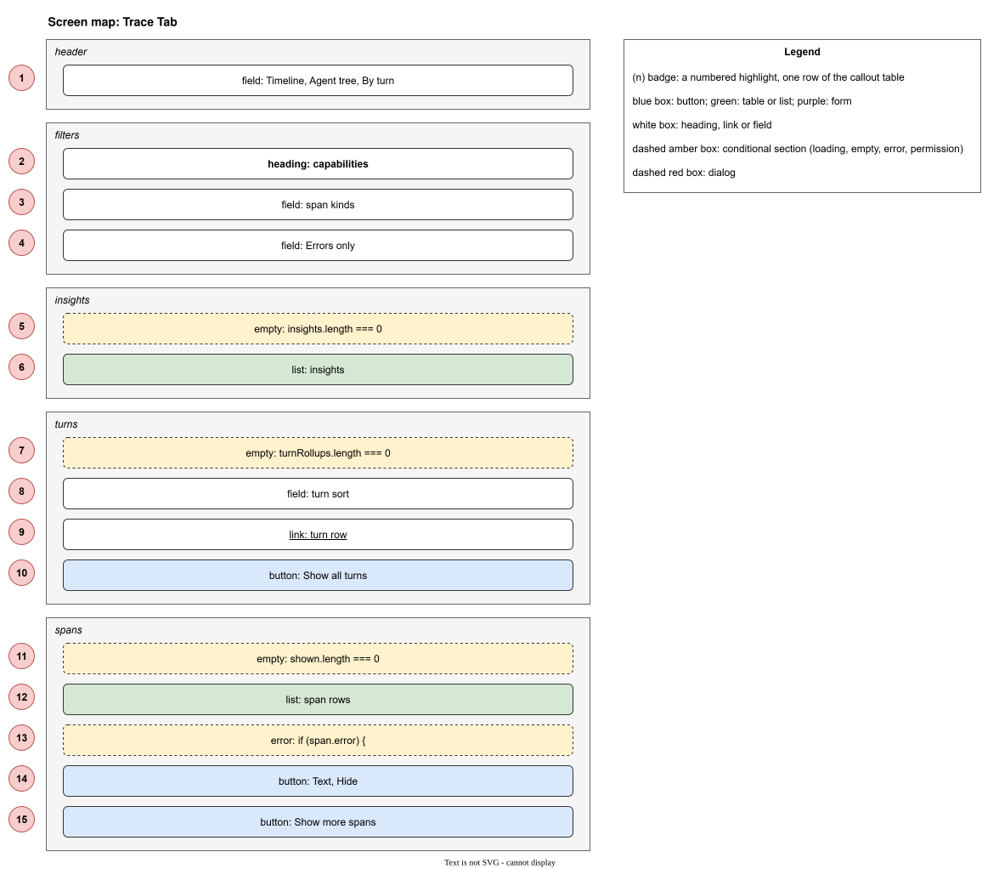

active approved inferred covers web/src/*, web/src/design-system/*
Trace Tab Screen Map
This map shows how a reader walks through every step of one session. It lets them switch between a timeline, an agent tree and a list of turns, filter by kind or errors, and open the text of a step. It also shows the places where the list can come up empty.
What the diagram shows
- The header toggles three modes, and the filter row offers span kinds and an errors only switch
web/src/TraceTab.tsx:907-963. - The insights panel lists findings that focus their span
web/src/TraceTab.tsx:257-299web/src/TraceTab.tsx:974. - By turn mode shows a sortable turn table whose rows jump back to the timeline
web/src/TraceTab.tsx:977-997web/src/TraceTab.tsx:813-821. - The other modes show the span rows, each with a status badge and a text button when the span has content
web/src/TraceTab.tsx:861-886web/src/TraceTab.tsx:1006-1013.
Capability and related functionality
The tab lives inside Session Workspace Screen and is focused from Context Tab Screen. Its states are drawn in Web Trace State Chart. The terms span, turn and provenance are in Web Glossary Map.
Trace Tab Screen screen map

Code references
| Badge | Element | Code |
|---|---|---|
| 1 | <ToggleGroup Timeline, Agent tree, By turn |
web/src/TraceTab.tsx:908-913 |
| 2 | <ProvenanceBadge capabilities |
web/src/TraceTab.tsx:924-924 |
| 3 | <ToggleGroup span kinds |
web/src/TraceTab.tsx:933-939 |
| 4 | <Toggle Errors only |
web/src/TraceTab.tsx:951-956 |
| 5 | insights.length === 0 empty section |
web/src/TraceTab.tsx:266-266 |
| 6 | <InsightList insights |
web/src/TraceTab.tsx:278-290 |
| 7 | turnRollups.length === 0 empty section |
web/src/TraceTab.tsx:978-978 |
| 8 | <SortSelect turn sort |
web/src/TraceTab.tsx:665-665 |
| 9 | <TableRow turn row |
web/src/TraceTab.tsx:683-689 |
| 10 | <Button Show all turns |
web/src/TraceTab.tsx:742-742 |
| 11 | shown.length === 0 empty section |
web/src/TraceTab.tsx:998-998 |
| 12 | <SpanTimeline span rows |
web/src/TraceTab.tsx:1007-1011 |
| 13 | if (span.error) { error section |
web/src/TraceTab.tsx:829-829 |
| 14 | <Button Text, Hide |
web/src/TraceTab.tsx:876-881 |
| 15 | <Button Show more spans |
web/src/TraceTab.tsx:1017-1017 |